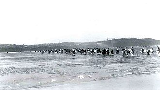
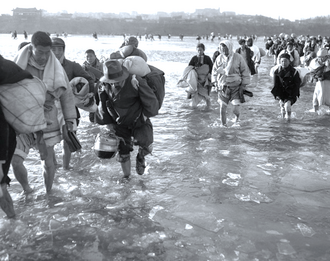

Part V · Cold War opens · Chapter 15
Inherits: The 1945–49 order (ch. 14) · Feeds: the epilogue question
Korea
1 The empty chair
Before dawn on 25 June 1950, artillery opens along a line of latitude across the Korean peninsula. The line is five years old. Two American colonels drew it in Washington one night in August 1945, working from a small-scale map, and it was never meant to be a border. Within two days Seoul has fallen. Two days after the guns, eleven men sit down at the Security Council of the United Nations. One chair is empty.
Korea had been ruled by Japan from 1910 until Japan’s surrender in August 1945. The parallel was chosen so Soviet forces could accept that surrender to its north and American forces to its south: an administrative division, not a settled frontier. In 1948, two states were proclaimed, one in Seoul and one in Pyongyang. Each claimed the whole peninsula. Soviet and American troops withdrew in 1948–49, leaving the temporary line between two governments that both wanted it gone.
The photograph below was taken six months later, on the frozen Taedong at Pyongyang. By then the front had gone north and come back the other way, and the walking was southward again. Most of what the war did, it did to people carrying bundles across water in winter.

The question behind the empty chair begins in another divided country. The People’s Republic of China was founded in October 1949, but China’s seat on the Security Council stayed with the Nationalists in Taipei. In January 1950 Moscow walked out of the Council in protest. The Soviet delegate stayed away.
On 27 June, the Council met in a converted factory building on Long Island. Resolution 83 called on UN members to help South Korea resist the advance. Seven members voted in favour, one against and two abstained. Seven was exactly the number an eleven-member Council needed. The absent Soviet delegate held one of the five permanent seats and could have cast a veto. Because the chair was empty, the veto was not cast.
That vote gave a legal UN flag to the force sent south. Under it, the US-led army landed at Incheon in September, crossed the parallel in October and reached the Yalu. Chinese People’s Volunteers entered the war and drove the front south. In February 1951, the UN General Assembly named the People’s Republic an aggressor. The Chinese seat that Moscow’s boycott was meant to win remained in Taipei for another twenty-one years, until 1971.
The mechanism turns back on itself. Moscow left the room because Beijing did not hold China’s seat. Its absence let the Council authorise a force. That force crossed north towards China, China entered the war to meet it, and the organisation whose recognition Beijing had been denied named Beijing the aggressor.
Moscow read the result quickly. The Soviet delegate returned in August 1950, in time to take the rotating presidency for that month and far too late to unmake June. No permanent member has staged a boycott like it since. The Charter asks for the concurring votes of the permanent members, but the Council has treated abstention or absence as a decision not to block.
That reading still governs the room. A Security Council draft can fall short of the nine votes it needs from fifteen members. It can also be stopped by a permanent member sitting in its chair and voting no. It cannot be stopped by that member leaving the building. The permanent members learned the difference from Korea.
The fighting stopped with an armistice on 27 July 1953. South Korea did not sign it, and no peace treaty followed. A Demilitarized Zone replaced the old line. Families separated by the fighting were separated by the armistice line afterwards, and stayed that way.

The 38th parallel is still a line on a map carried in a pocket. It began here as an administrative division for accepting Japan’s surrender, became the place an army crossed, and ended as the neighbourhood of a border. The postwar order had become an army, a flag and a border that still divides families. The empty chair did not produce the war — the tanks of 25 June did that. It produced the flag the war was fought under.
2 The dates, briefly
- 1910–August 1945: Japan rules Korea; after Japan’s surrender, Soviet forces accept it north of the 38th parallel and American forces south.
- 1948: the Republic of Korea is proclaimed in the south and the Democratic People’s Republic of Korea in the north; each claims the whole peninsula.
- 25 June 1950: North Korean forces cross the parallel in strength. Seoul falls within days.
- September–November 1950: the Incheon landing, the northward crossing of the parallel, and the entry of Chinese People’s Volunteers reverse the front twice.
- 27 July 1953: the UN Command, the Korean People’s Army and the Chinese People’s Volunteers sign an armistice at Panmunjom.
3 What reaches the classroom
Now enter the classroom. Seven books teach the war, and they split three ways at its first sentence. Belarus puts Korea in a list of local conflicts and names no starter. India says the war “broke out,” then turns to what it cost a developing economy. China calls the opening a civil war; in the next clause, the United States becomes the subject that manipulates, crosses and invades.
IN · NCERT 2022+:
“In June 1950, the Korean War broke out. With South Korea receiving support from the US-led United Nations forces and North Korea receiving support from communist China, it developed into a vintage proxy war of the Cold War era.”
Themes in World History, Class XI · pp. 175–176Four books give the crossing an army and a verb. Italy calls it an invasion and names the Soviet supplier. Britain begins “Without warning,” then spends two pages testing five possible explanations. The American book names the Korean People’s Army and the date, but removes the convenient idea that Moscow ordered the move: Stalin had warned Kim against it. Ukraine first gives both governments the same ambition, then says which one moved.
UA · Гісем–Мартинюк 2019:
“At the same time both regimes sought to unite the Korean peninsula under their own power. In June 1950 North Korean troops crossed the 38th parallel and began a war.”
Всесвітня історія, 11 кл. (2019) · p. 18The verbs give seven students different jobs: accept a conflict with no author, understand a civil war, or assign the crossing to an army. The war’s names do more work. China’s title for its own campaign, “resist America, aid Korea,” assigns aggressor and defender before the account begins. Scare quotes then mirror one another: China quarantines the “United Nations Force”; British and Italian books quarantine the Chinese “volunteers.” Nobody lets the other side keep its own name for its own soldiers.
Then comes the shared omission. Belarus leaves out almost the whole war; India leaves out who fired first; China leaves the Soviet chair out of the room. Italy and the American book print the absence, but stop before following its consequences. Ukraine and Britain print the dispute over China’s UN seat elsewhere, without wiring it to the June vote. Five of eleven classrooms print at least one gear of the empty-chair machine. None assembles it. They argue over whether the force deserved the UN name while leaving out the accident that gave it that name.
4 Credit, with limits
Lowe earns credit for turning “Without warning” into an inquiry rather than an answer; OpenStax explains how the absent Soviet veto let the Council act; Гісем–Мартинюк gives both Korean governments the same ambition before naming the one that crossed. The award is narrow. These are seven pinned editions, and the four books that do not teach the war stop before 1950 or serve another kind of syllabus. Italy’s 2004 book is a university manual, and the current Russian narrative volume that would cover June 1950 is not on this shelf.
The full comparison and receipts for this chapter
Now look up what your textbook calls it.